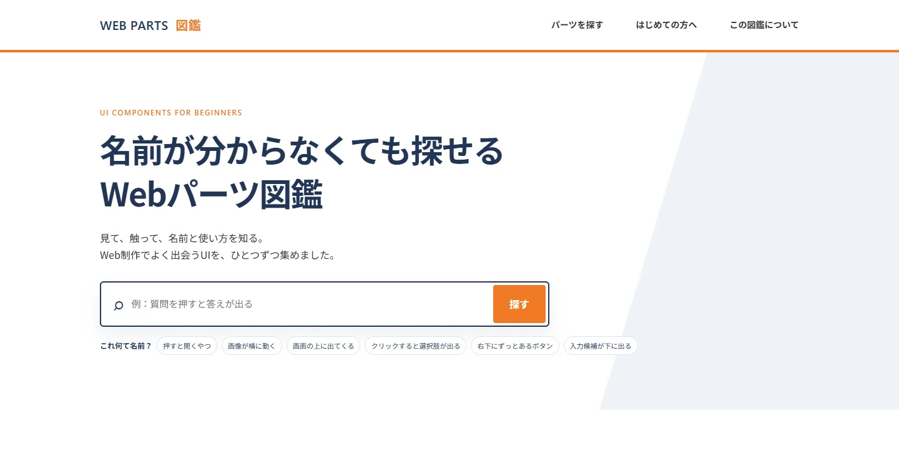
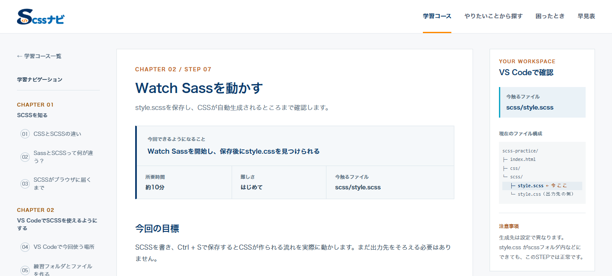
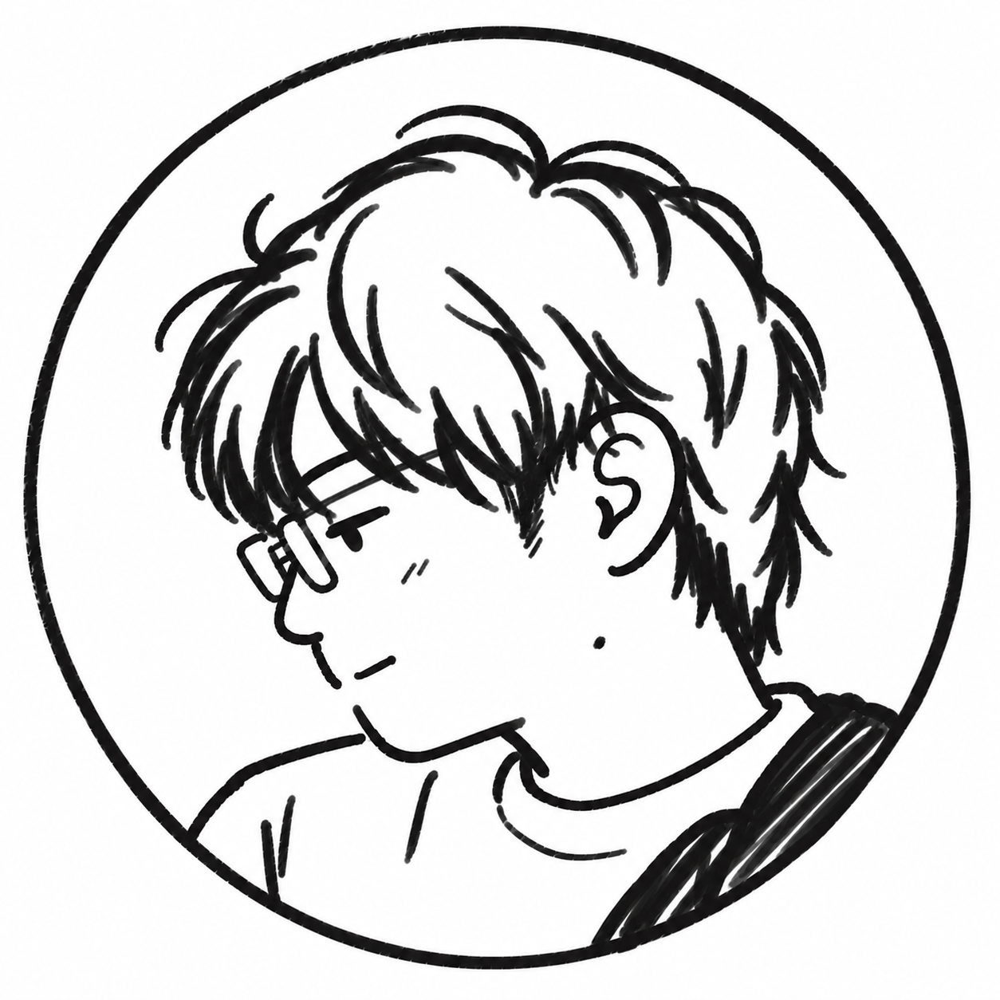

UIパーツ検索、ワイヤーフレーム作成、PC・スマホ表示比較の3ツールを制作。機能とUIを自分で決め、Codexを使って実装しました。
- 本人
- 企画・機能選定・UI・操作設計・改善判断
- AI
- Codexによる実装・修正支援
Responsive Preview Labでは、当初の6画面案を見直し、まず390px・1440pxの2画面を見比べられる構成にしました。
Aoi Toolsの制作過程を見る山口 碧｜Web/UIデザイン・AI活用事例
UIパーツ検索、ワイヤーフレーム作成、PCとスマホの表示比較。制作の手間を減らす3つのWebツールを作りました。設計は自分で行い、実装と検証にAIを使っています。
制作事例を見る
Webツールの設計、広告バナーの制作、制作知識の整理、Excel作業まで。何を自分で判断し、AIをどの工程で使ったかを紹介します。

UIパーツ検索、ワイヤーフレーム作成、PC・スマホ表示比較の3ツールを制作。機能とUIを自分で決め、Codexを使って実装しました。
Responsive Preview Labでは、当初の6画面案を見直し、まず390px・1440pxの2画面を見比べられる構成にしました。
Aoi Toolsの制作過程を見る
SCSS初心者向けに、Lessonの順番と説明の細かさ、画面構成を設計。ロゴは自作し、ChatGPTで構成を検討してCodexで実装しました。
制作知識の整理・参照
制作の判断基準を、次の作業にも引き継ぐ。
デザイン原則や制作ルールを資料に整理。目次から必要なものを選び、ChatGPTやCodexに参照させています。
Knowledgeの運用を見る業務手順の整理
照合・集計を、繰り返し使える手順にする。
回答データと参照データの照合・集計にCopilotを活用。作業手順と確認箇所をプロンプトにまとめ、結果は自分で確認しています。
Excelでの活用を見る画面比較ツールは、よく確認するPCとスマホの2画面を先に見せる構成へ変更。機能の追加より、普段の作業で使いやすいことを優先しました。
企画・要件の決定、ロゴ・UI制作、画面と操作の設計、内容確認・改善判断。
要件や構成の整理、公開Webの調査、コードの生成・修正・確認、定型的な照合・集計。
制作中に困った場面を出発点に、Aoi Toolsの機能を考えました。
UIパーツを見つけにくい、画面サイズの切り替えが手間。そんな制作中の問題を整理しました。
ChatGPTで要件の言語化を補助。
検索やプレビューの画面構成、表示する項目、操作の順番を設計。見た目の案を作って終わりにせず、実装につなげました。
HTML・CSS・JavaScriptの実装と修正にCodexを使用。
実際の画面で動きを確認し、Responsive Preview Labでは6画面案を2画面中心に変更。日常の確認で使いやすい形を優先しました。
AIによるコード確認も参考にし、採用する仕様は実画面を見て判断。
デザインの判断基準や確認手順を資料に残し、必要な部分をAIに参照させています。設計・実装・確認の担当も作業に合わせて決めています。
判断基準を引き継ぐKnowledgeの運用Google Drive Knowledge — デザイン原則、Webの実例、コピー、過去の制作判断や運用ルールを保存し、必要な資料だけ参照します。
画面・ビジュアルの制作 — Figma・Photoshop・IllustratorWeb実装・公開 — HTML・CSS・JavaScript・GitHub・Cloudflare

Aoi Yamaguchi
FigmaでのWeb/UIデザイン、Webサイトの更新やバナー制作を行っています。制作中の不便から、Aoi Toolsの3つのWebツールも作りました。
AIは要件整理や実装の補助に使っています。画面の使い勝手を実際に確かめ、使う機能と外す機能を決めるのは自分の役割です。
Web・グラフィックの制作実績を見る